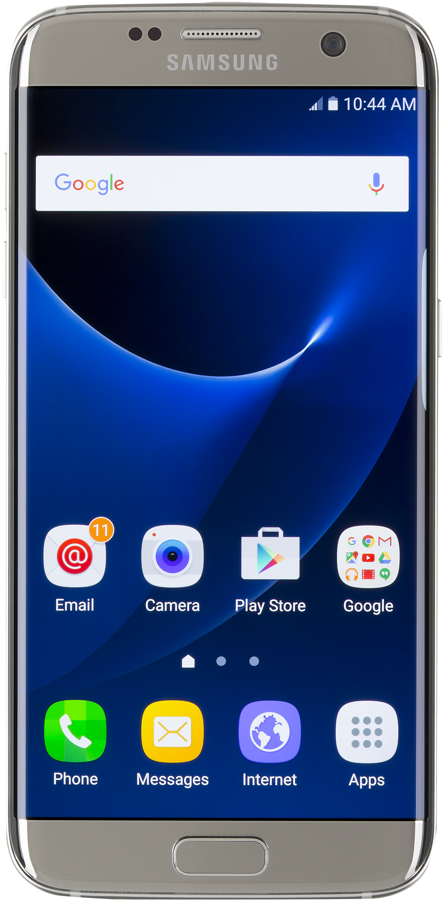
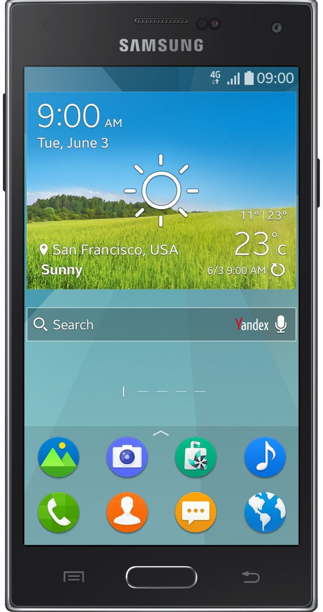

역사
최초의 스마트폰은 사이먼(Symon)으로 추정된다.
최초의 스마트폰은 사이먼(Symon)으로 추정된다.
안드로이드(영어: Android)는 휴대 전화를 비록한 휴대용 장치를 위한 운영 체제와 미들웨어, 사용자 인터페이스 그리고 표준 응용 프로그램(웹 브라우저, 이메일 클라이언트, 단문 메시지 서비스(SMS),MMS 등)을 포함하고 있는 소프트퉤어 스택이자 모바일 운영 체제이다.
아이폰(영어: iPhone)은 2007년 1월 9일, 애플이 발표한 휴대 전화 시리즈이다. 미국 센프란시스코에서 열린 맥월드 2007에서 애플의 창업자 중 한명인 스티브 잡스가 발표했다.
|  |  |
 |  |
 |